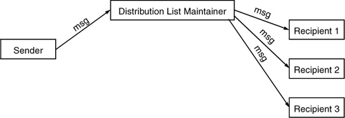
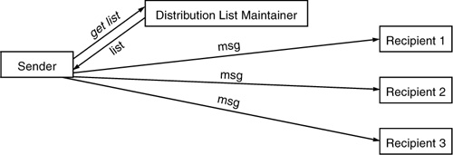

Networking Security Networking Security Networking Security Security Networking Security Networking Security Networking Charlie Kaufman Radia Perlman Mike Speciner Prentice Hall Network Security: Private Communication in a Public World, Second Edition Networking Security Networking Security Networking Security Security Networking Security Networking Security Networking Charlie Kaufman Radia Perlman Mike Speciner Prentice Hall Network Security: Private Communication in a Public World, Second Edition
20.1. Distribution Lists
Electronic mail allows a user to send a message to one or more recipients. The simplest form of electronic mail message is where Alice sends a message to Bob.
90
To: Bob
From: Alice
Care to meet me in my apartment tonight?
|
Usually, a mail system allows a message to be sent to multiple recipients, for example:
90
To: Bob, Carol, Ted
From: Alice
Care to meet me in my apartment tonight?
|
Sometimes it is impossible or inconvenient to list all recipients. For this reason, mail is often sent to a distribution list, a name that stands for a set of recipients. For instance, a message might be sent to Taxpayers. There are two ways of implementing distribution lists.
The first way involves sending the message to a site at which the list is maintained, and that site then sends a copy of the message to each recipient on the list. We'll call that the remote exploder method.

The second method is for the sender to retrieve the list from the site where it is kept, and then send a copy of the message to each recipient on the list. We'll call that the local exploder method.

Sometimes a member of a distribution list can be another distribution list. For instance, the mailing list Security Customers, used to advertise security products, might include law enforcers, bankers, Democratic National Committee, locksmiths, and members of organized crime. It is possible to construct a distribution list with an infinite loop. Suppose someone is maintaining a mailing list for cryptographers. Someone else is maintaining one for cryptanalysts. The cryptanalysts point out that they also want to hear the information sent to the cryptographers mailing list, so the distribution list Cryptanalysts is added to the Cryptographers mailing list. And for similar reasons Cryptographers is added to Cryptanalysts. The mail system must handle infinite loops in distribution lists in a reasonable manner, i.e., it must send each recipient at least one copy of each message but not an unreasonable number of copies of any. Loops like this effectively merge the mailing lists. (See Homework Problem 1.)
As we described above, there are two methods of implementing distribution lists. The advantages of the local exploder method are:
It is easier to prevent mail forwarding loops. If there are multiple distribution lists, it is possible for the sender to prevent duplicate copies being sent to individuals on multiple lists. If the network billing is usage-based as opposed to flat-fee, it is easier for the sender to know in advance just how much bandwidth will be consumed to transmit the message.
There are several advantages to the remote exploder method:
It allows you to send to a list whose membership you are not allowed to know. (To U.S. spies living abroad from the IRS: friendly reminderÂthe tax deadline is April 15. Being caught or killed is not one of the grounds for automatic extension.) If distribution lists are organized geographically, you need only send one copy of a message over an expensive link to a remote area. (To Citizens of France from the U.S. government: Thanks for the big statue.) When the distribution list is longer than the message, it is more efficient to send the message from the sender to the distribution list site than to send the distribution list to the sender. (To people of planet earth: Greeting. Unless you stop transmitting reruns of the I Love Lucy show to us we will be forced to destroy your planet.) When distribution lists are included on distribution lists, it would be time-consuming to track down the whole tree to get to all the individuals. Instead, the message can be making progress as it is sent to the various exploders. Parallelism is exploited.
|